Maternal antibody is measured at an early-pregnancy,
pre-vaccination visit (PregEarly) and again
at birth/delivery (MatBirth). Between
these two visits the mother receives the study vaccine (a
pertussis-containing TdaP or the TT control), which is expected to
boost vaccine-targeted antibody. Whether a given
feature is higher or lower by delivery depends on the interval
between vaccination and birth: a short interval may catch
antibody still rising, while a longer interval may capture post-peak
waning. Direction is therefore not assumed and is
expected to vary by antigen and by analyte.
Convention: delta = log10 value at maternal birth − log10 value at maternal pre-vacc. Positive delta = an increase by delivery; negative delta = a decrease by delivery.
Features with at least one paired subject: 47; with ≥ 10 paired: 47.
| Feature | n PregEarly | n MatBirth | n paired (both) |
|---|---|---|---|
| DT_IgG | 312 | 283 | 283 |
| FHA_IgG | 312 | 283 | 283 |
| FIM_IgG | 312 | 283 | 283 |
| PRN_IgG | 312 | 283 | 283 |
| PT_IgG | 312 | 283 | 283 |
| TT_IgG | 312 | 283 | 283 |
| DT_IgG1 | 264 | 247 | 243 |
| DT_IgG4 | 264 | 247 | 243 |
| FHA_IgG1 | 264 | 247 | 243 |
| FHA_IgG4 | 264 | 247 | 243 |
| IPV1_IgG1 | 264 | 247 | 243 |
| IPV1_IgG4 | 264 | 247 | 243 |
| IPV2_IgG1 | 264 | 247 | 243 |
| IPV2_IgG4 | 264 | 247 | 243 |
| IPV3_IgG1 | 264 | 247 | 243 |
| IPV3_IgG4 | 264 | 247 | 243 |
| PRN_IgG1 | 264 | 247 | 243 |
| PRN_IgG4 | 264 | 247 | 243 |
| PT_IgG1 | 264 | 247 | 243 |
| PT_IgG4 | 264 | 247 | 243 |
| TT_IgG1 | 264 | 247 | 243 |
| TT_IgG4 | 264 | 247 | 243 |
| DT_IgG3 | 246 | 241 | 237 |
| FHA_IgG3 | 246 | 241 | 237 |
| IPV1_IgG3 | 246 | 241 | 237 |
| IPV2_IgG3 | 246 | 241 | 237 |
| IPV3_IgG3 | 246 | 241 | 237 |
| PRN_IgG3 | 246 | 241 | 237 |
| PT_IgG3 | 246 | 241 | 237 |
| TT_IgG3 | 246 | 241 | 237 |
| DT_ADCD | 262 | 240 | 234 |
| FHA_ADCD | 262 | 240 | 234 |
| IPV1_ADCD | 262 | 240 | 234 |
| IPV2_ADCD | 262 | 240 | 234 |
| IPV3_ADCD | 262 | 240 | 234 |
| PENTAMER_ADCD | 262 | 240 | 234 |
| PRN_ADCD | 262 | 240 | 234 |
| PT_ADCD | 262 | 240 | 234 |
| TT_ADCD | 262 | 240 | 234 |
| DT_IgG2 | 252 | 235 | 231 |
| FHA_IgG2 | 252 | 235 | 231 |
| PRN_IgG2 | 252 | 235 | 231 |
| PT_IgG2 | 252 | 235 | 231 |
| TT_IgG2 | 252 | 235 | 231 |
| IPV1_IgG2 | 234 | 217 | 213 |
| IPV2_IgG2 | 234 | 217 | 213 |
| IPV3_IgG2 | 234 | 217 | 213 |
Not all subjects contribute equally to every feature’s paired analysis, and the reasons differ in important ways. Understanding the missing-data structure is essential before interpreting the change estimates: subjects who are missing at one or both visits may differ systematically from those with complete data, and the pattern of missingness itself reveals aspects of the assay design that affect what questions can be answered.
There are four distinct sources of missingness in this dataset, each with a different cause and a different implication for bias:
Type A — Analyte never assayed at one visit (structural panel gap). Some analytes may not have been run at one of the two visits at all, giving n = 0 there. This is a design decision, not subject dropout, and is not correctable from the existing data: no paired change can be computed for those analytes. (See Table 1 for which features have n paired = 0.)
Type B — One visit’s panel run on a smaller sub-cohort than the other. For features measured at both visits, the number of observations at the two visits can differ if a panel was rolled out to different subject batches. The per-analyte step-down below shows the structure:
| Analyte group | N features | Typical n PregEarly | Typical n MatBirth | Typical n paired | MatBirth minus PregEarly |
|---|---|---|---|---|---|
| Total IgG (antigen-specific) | 6 | 312 | 283 | 283 | -29 |
| IgG1 and IgG4 | 16 | 264 | 247 | 243 | -17 |
| Other | 9 | 262 | 240 | 234 | -22 |
| IgG2 — core antigens | 5 | 252 | 235 | 231 | -17 |
| IgG3 | 8 | 246 | 241 | 237 | -5 |
| IgG2 — IPV antigens | 3 | 234 | 217 | 213 | -17 |
Any stepped structure here reflects which analyte panels were run on which subject batches, rather than subject dropout. Where one analyte is available on fewer subjects than another, the smaller subset may differ systematically (e.g. earlier-enrolled or a specific plate batch); confirm before pooling those features with the better-covered ones. Specifics to be read from the rendered Table 2.
Type C — Dropout (subjects with a value at one visit but not the other). Subjects present at one visit but missing the other contribute to that visit’s cross-sectional n but not to the paired change. The size of this group is the gap between each visit’s n and the paired n in Table 1.
Type D — Feature-level NA within otherwise assayed subjects. A subject may attend both visits yet still be dropped from a feature’s paired analysis if the value failed QC at one visit (insufficient volume, assay failure). This is the difference between the per-visit n and the paired n not explained by Type B/C.
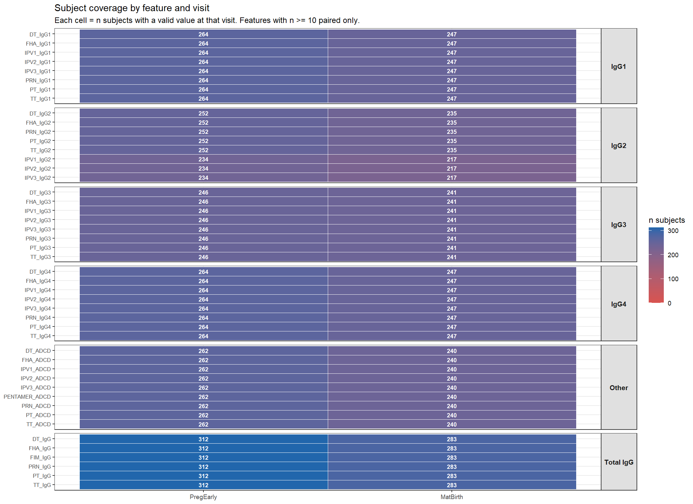
Figure M1. Coverage heatmap: number of subjects with a valid measurement at the earlier and later visit for every well-covered feature (n >= 10 paired). Features are grouped by analyte type and ordered by earlier-visit n within group. Any step-down in coverage by analyte group (Type B missingness) is visible here.
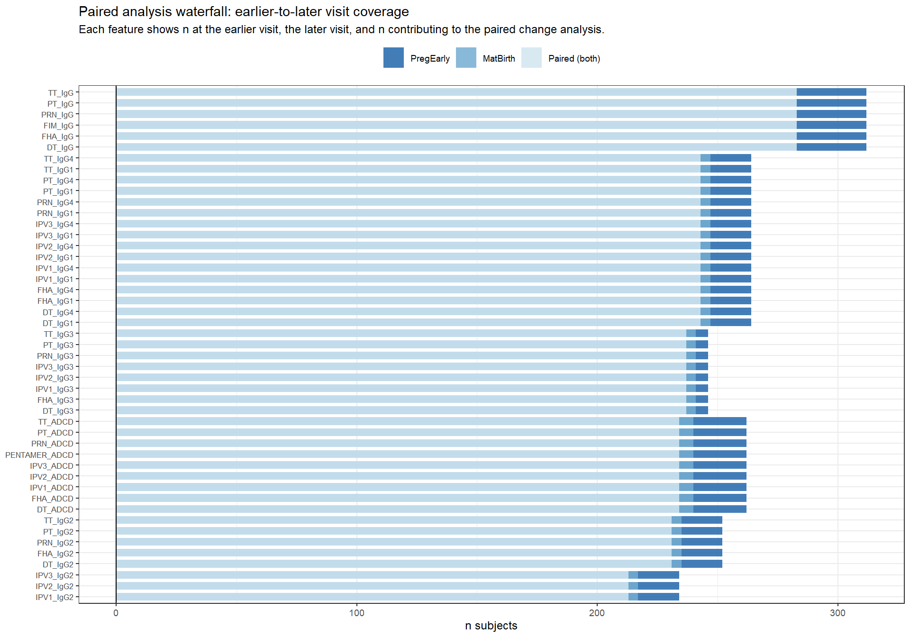
Figure M2. Paired analysis waterfall: for each well-covered feature, overlapping bars show n subjects at the earlier visit (dark blue), at the later visit (medium blue), and paired at both (light blue). The gap between the later-visit bar and the paired bar is Type B+C+D missingness. Features ordered by n paired.
The per-feature view above (Figures M1–M2) is computed from the coverage summary. To see missingness at the subject level we use the paired dataset directly: each subject contributes a known set of features to the paired change analysis, and the number of features a subject contributes reveals which assay batches they were part of. A subject who received the full panel contributes up to 10+ features; a subject in an early, total-IgG-only batch contributes far fewer.
One limitation to state plainly: the paired dataset contains only subjects who achieved at least one valid earlier↔︎later visit pairing. Subjects who attended only one visit, or whose every measurement failed pairing, do not appear here at all — quantifying that group requires the per-visit raw records and is not attempted in this document. The per-feature coverage gaps in Table 1 (e.g. later-visit n exceeding earlier-visit n) are the aggregate footprint of those subjects.
| Analyte group | N subjects contributing ≥ 1 paired feature |
|---|---|
| Total IgG | 283 |
| IgG1 | 243 |
| IgG4 | 243 |
| IgG3 | 237 |
| Other | 234 |
| IgG2 | 231 |
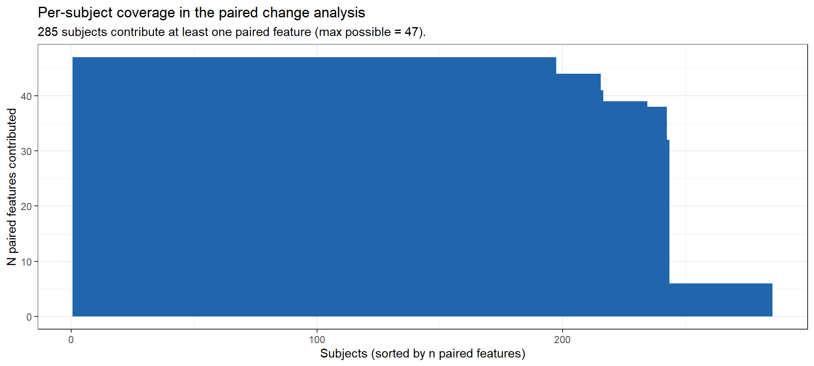
Figure M3. Per-subject paired-feature coverage. Each bar is one subject; height = number of distinct features that subject contributes to the paired change analysis, sorted descending. The flat plateaus reflect the assay batch structure: subjects either received a given panel or did not, producing discrete coverage levels rather than a smooth gradient.
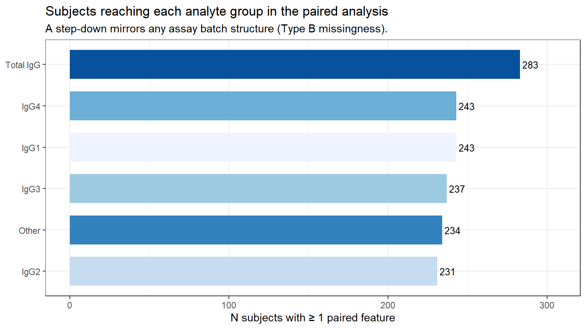
Figure M4. Number of subjects contributing at least one paired feature, by analyte group. The step-down from Total IgG through the IgG subclasses is the subject-level signature of any assay batch rollout (Type B missingness): if a panel was run on fewer samples at one visit, progressively fewer subjects can contribute that paired feature.
Brief notes — to be expanded after reviewing the rendered tables and figures.
Verdict: The change is concentrated, not uniform: 17 features increase, 6 decrease, and 24 are mixed, but 71.2% of mothers show a net positive shift. The increases concentrate in ADCD, IgG1, IgG and in the antigens FHA, PT, PRN, IPV1 (see Tables 5–6); the per-arm split, and the tetanus/diphtheria toxoid responses specifically, are in Tables 7–9 and Figure A1 and discussed in the Interpretation section below.
| feature | class | antigen | analyte | n_paired | % increase | % decrease | median delta | mean delta | p signed-rank | p sign-test | direction |
|---|---|---|---|---|---|---|---|---|---|---|---|
| FHA_IgG | Total IgG | FHA | IgG | 283 | 74.6 | 25.4 | 0.138 | 0.534 | 0.00e+00 | 0.00e+00 | mostly increase |
| FHA_IgG1 | IgG subclass | FHA | IgG1 | 243 | 74.5 | 25.5 | 0.292 | 0.568 | 0.00e+00 | 0.00e+00 | mostly increase |
| PT_IgG1 | IgG subclass | PT | IgG1 | 243 | 72.8 | 25.9 | 0.148 | 0.310 | 0.00e+00 | 0.00e+00 | mostly increase |
| PRN_IgG | Total IgG | PRN | IgG | 283 | 72.4 | 27.6 | 0.142 | 0.652 | 0.00e+00 | 0.00e+00 | mostly increase |
| IPV3_ADCD | Effector function | IPV3 | ADCD | 234 | 70.5 | 26.1 | 0.054 | 0.122 | 0.00e+00 | 0.00e+00 | mostly increase |
| PT_IgG | Total IgG | PT | IgG | 283 | 70.3 | 29.7 | 0.161 | 0.484 | 0.00e+00 | 0.00e+00 | mostly increase |
| IPV2_ADCD | Effector function | IPV2 | ADCD | 234 | 69.2 | 26.5 | 0.046 | 0.223 | 0.00e+00 | 0.00e+00 | mostly increase |
| PT_ADCD | Effector function | PT | ADCD | 234 | 68.4 | 29.1 | 0.121 | 0.301 | 0.00e+00 | 0.00e+00 | mostly increase |
| IPV1_IgG1 | IgG subclass | IPV1 | IgG1 | 243 | 67.9 | 26.7 | 0.111 | 0.288 | 0.00e+00 | 0.00e+00 | mostly increase |
| PRN_IgG1 | IgG subclass | PRN | IgG1 | 243 | 67.9 | 30.9 | 0.100 | 0.394 | 0.00e+00 | 0.00e+00 | mostly increase |
| IPV2_IgG1 | IgG subclass | IPV2 | IgG1 | 243 | 67.1 | 32.9 | 0.077 | 0.225 | 0.00e+00 | 1.00e-07 | mostly increase |
| FHA_ADCD | Effector function | FHA | ADCD | 234 | 66.7 | 31.2 | 0.103 | 0.244 | 0.00e+00 | 0.00e+00 | mostly increase |
| IPV1_ADCD | Effector function | IPV1 | ADCD | 234 | 65.4 | 27.4 | 0.057 | 0.258 | 0.00e+00 | 0.00e+00 | mostly increase |
| PRN_ADCD | Effector function | PRN | ADCD | 234 | 64.5 | 32.5 | 0.054 | 0.321 | 0.00e+00 | 7.00e-07 | mostly increase |
| DT_ADCD | Effector function | DT | ADCD | 234 | 62.0 | 35.0 | 0.066 | 0.232 | 0.00e+00 | 3.48e-05 | mostly increase |
| IPV3_IgG1 | IgG subclass | IPV3 | IgG1 | 243 | 61.3 | 37.9 | 0.030 | 0.093 | 0.00e+00 | 2.92e-04 | mostly increase |
| FIM_IgG | Total IgG | FIM | IgG | 283 | 60.8 | 38.5 | 0.042 | 0.072 | 3.63e-05 | 2.05e-04 | mostly increase |
| PRN_IgG2 | IgG subclass | PRN | IgG2 | 231 | 59.7 | 38.5 | 0.025 | 0.132 | 0.00e+00 | 1.39e-03 | mixed |
| PT_IgG2 | IgG subclass | PT | IgG2 | 231 | 59.7 | 27.7 | 0.036 | 0.136 | 0.00e+00 | 2.00e-07 | mixed |
| PRN_IgG4 | IgG subclass | PRN | IgG4 | 243 | 59.3 | 29.2 | 0.013 | 0.059 | 0.00e+00 | 7.00e-07 | mixed |
| TT_IgG4 | IgG subclass | TT | IgG4 | 243 | 59.3 | 37.4 | 0.032 | 0.060 | 5.14e-05 | 6.62e-04 | mixed |
| DT_IgG2 | IgG subclass | DT | IgG2 | 231 | 58.9 | 29.9 | 0.033 | 0.173 | 0.00e+00 | 3.30e-06 | mixed |
| FHA_IgG3 | IgG subclass | FHA | IgG3 | 237 | 58.6 | 38.8 | 0.044 | 0.178 | 0.00e+00 | 2.40e-03 | mixed |
| TT_IgG2 | IgG subclass | TT | IgG2 | 231 | 58.4 | 40.7 | 0.016 | 0.049 | 4.08e-05 | 8.07e-03 | mixed |
| DT_IgG | Total IgG | DT | IgG | 283 | 58.0 | 42.0 | 0.041 | 0.293 | 8.00e-07 | 8.79e-03 | mixed |
| PT_IgG3 | IgG subclass | PT | IgG3 | 237 | 55.7 | 35.0 | 0.042 | 0.074 | 7.00e-07 | 1.02e-03 | mixed |
| IPV1_IgG3 | IgG subclass | IPV1 | IgG3 | 237 | 54.9 | 38.8 | 0.014 | 0.049 | 1.42e-05 | 1.28e-02 | mixed |
| DT_IgG4 | IgG subclass | DT | IgG4 | 243 | 54.7 | 37.4 | 0.023 | 0.238 | 4.05e-05 | 6.03e-03 | mixed |
| IPV2_IgG2 | IgG subclass | IPV2 | IgG2 | 213 | 53.5 | 32.4 | 0.011 | 0.026 | 9.40e-06 | 1.09e-03 | mixed |
| DT_IgG1 | IgG subclass | DT | IgG1 | 243 | 51.0 | 46.5 | 0.007 | 0.239 | 1.08e-04 | 5.16e-01 | mixed |
| PRN_IgG3 | IgG subclass | PRN | IgG3 | 237 | 49.4 | 48.1 | 0.000 | 0.036 | 1.80e-01 | 8.95e-01 | mixed |
| PT_IgG4 | IgG subclass | PT | IgG4 | 243 | 48.6 | 30.0 | 0.000 | 0.072 | 0.00e+00 | 1.39e-03 | mixed |
| TT_IgG1 | IgG subclass | TT | IgG1 | 243 | 48.6 | 51.4 | -0.008 | 0.015 | 7.23e-01 | 7.00e-01 | mixed |
| TT_IgG | Total IgG | TT | IgG | 283 | 48.1 | 51.9 | -0.011 | 0.028 | 8.47e-01 | 5.52e-01 | mixed |
| IPV1_IgG2 | IgG subclass | IPV1 | IgG2 | 213 | 47.4 | 31.9 | 0.000 | 0.015 | 2.31e-03 | 1.36e-02 | mixed |
| DT_IgG3 | IgG subclass | DT | IgG3 | 237 | 46.8 | 40.5 | 0.000 | 0.027 | 5.52e-02 | 3.31e-01 | mixed |
| TT_ADCD | Effector function | TT | ADCD | 234 | 45.3 | 43.2 | 0.000 | 0.018 | 5.39e-01 | 7.81e-01 | mixed |
| FHA_IgG2 | IgG subclass | FHA | IgG2 | 231 | 45.0 | 33.3 | 0.000 | 0.374 | 1.14e-02 | 5.30e-02 | mixed |
| IPV3_IgG2 | IgG subclass | IPV3 | IgG2 | 213 | 44.6 | 38.0 | 0.000 | 0.017 | 9.19e-02 | 3.27e-01 | mixed |
| IPV2_IgG3 | IgG subclass | IPV2 | IgG3 | 237 | 43.0 | 55.7 | -0.025 | -0.043 | 2.00e-01 | 5.78e-02 | mixed |
| IPV3_IgG3 | IgG subclass | IPV3 | IgG3 | 237 | 40.1 | 58.2 | -0.022 | -0.047 | 3.24e-02 | 5.81e-03 | mixed |
| FHA_IgG4 | IgG subclass | FHA | IgG4 | 243 | 39.5 | 55.6 | -0.026 | -0.087 | 9.98e-04 | 1.22e-02 | mostly decrease |
| IPV2_IgG4 | IgG subclass | IPV2 | IgG4 | 243 | 39.5 | 32.1 | 0.000 | 0.011 | 5.73e-02 | 1.97e-01 | mostly decrease |
| TT_IgG3 | IgG subclass | TT | IgG3 | 237 | 38.8 | 58.2 | -0.012 | -0.018 | 6.52e-05 | 2.92e-03 | mostly decrease |
| IPV3_IgG4 | IgG subclass | IPV3 | IgG4 | 243 | 37.4 | 30.5 | 0.000 | -0.020 | 8.28e-02 | 2.13e-01 | mostly decrease |
| IPV1_IgG4 | IgG subclass | IPV1 | IgG4 | 243 | 35.4 | 30.9 | 0.000 | -0.013 | 7.56e-01 | 4.31e-01 | mostly decrease |
| PENTAMER_ADCD | Effector function | PENTAMER | ADCD | 234 | 30.3 | 20.5 | 0.000 | 0.006 | 1.34e-01 | 4.33e-02 | mostly decrease |
| Analyte | N features | N mostly increasing | N mostly decreasing | N mixed | Median delta (log10) | Mean % subjects increasing | Overall direction |
|---|---|---|---|---|---|---|---|
| IgG3 | 8 | 0 | 1 | 7 | 0.000 | 48.4 | mixed |
| IgG4 | 8 | 0 | 4 | 4 | 0.000 | 46.7 | mixed |
| IgG2 | 8 | 0 | 0 | 8 | 0.014 | 53.4 | mixed |
| ADCD | 9 | 7 | 1 | 1 | 0.054 | 60.3 | predominantly increasing |
| IgG1 | 8 | 6 | 0 | 2 | 0.088 | 63.9 | predominantly increasing |
| IgG | 6 | 4 | 0 | 2 | 0.090 | 64.0 | predominantly increasing |
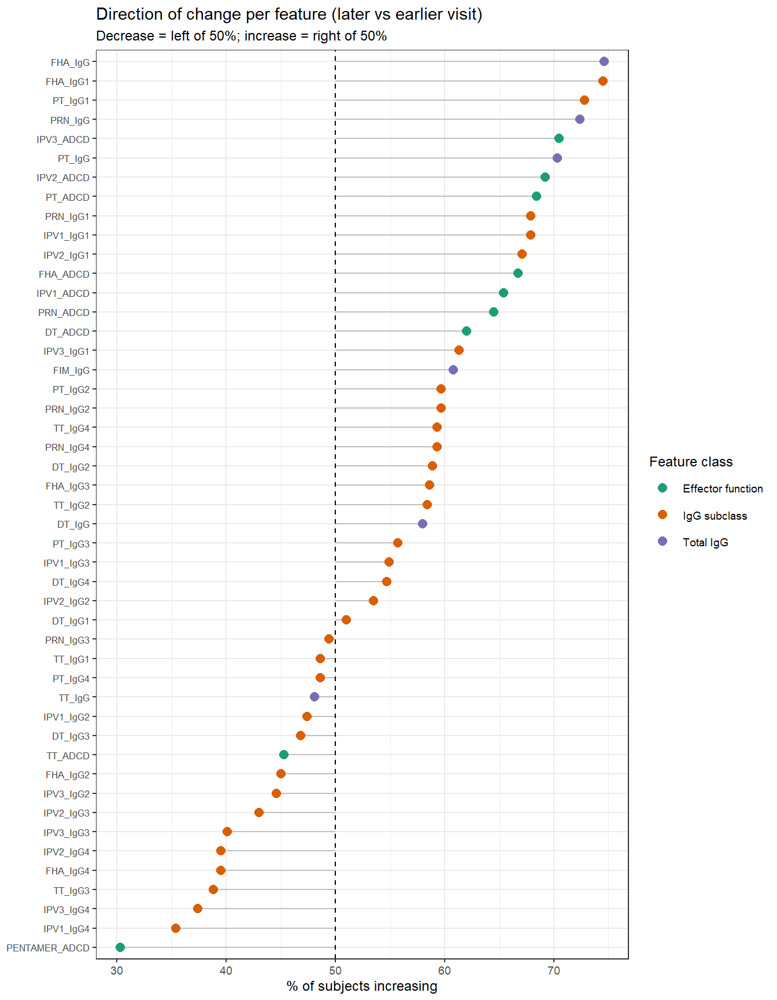
Figure 1. Percent of subjects increasing (later visit > earlier visit), by feature, coloured by feature class. Dashed line = 50% (no net direction). Features to the right increase in most subjects; features to the left decrease in most subjects.
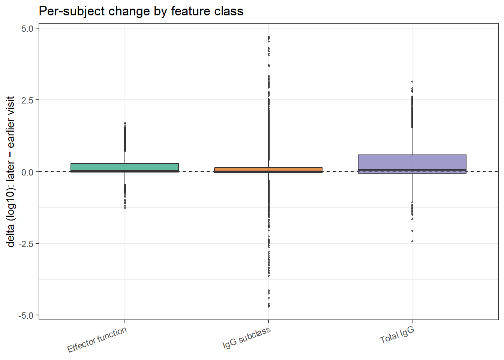
Figure 2. Distribution of per-subject delta (later − earlier visit) by feature class. Zero = no change.
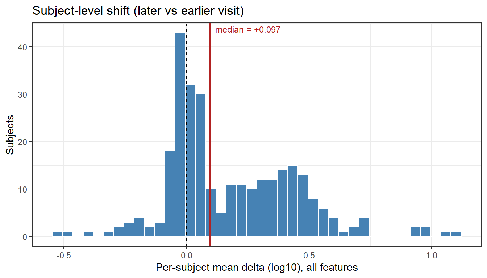
Figure 3. Per-subject mean delta across all features. A distribution clearly displaced from zero would indicate a subject-level (sample/plate) offset; a distribution straddling zero indicates feature-structured rather than uniform change.
Each panel pools all analytes measured for that antigen. The dashed line marks zero; the red line marks the antigen-level median delta. Antigens are ordered from the most negative (strongest decay) to the most positive (strongest increase) median.
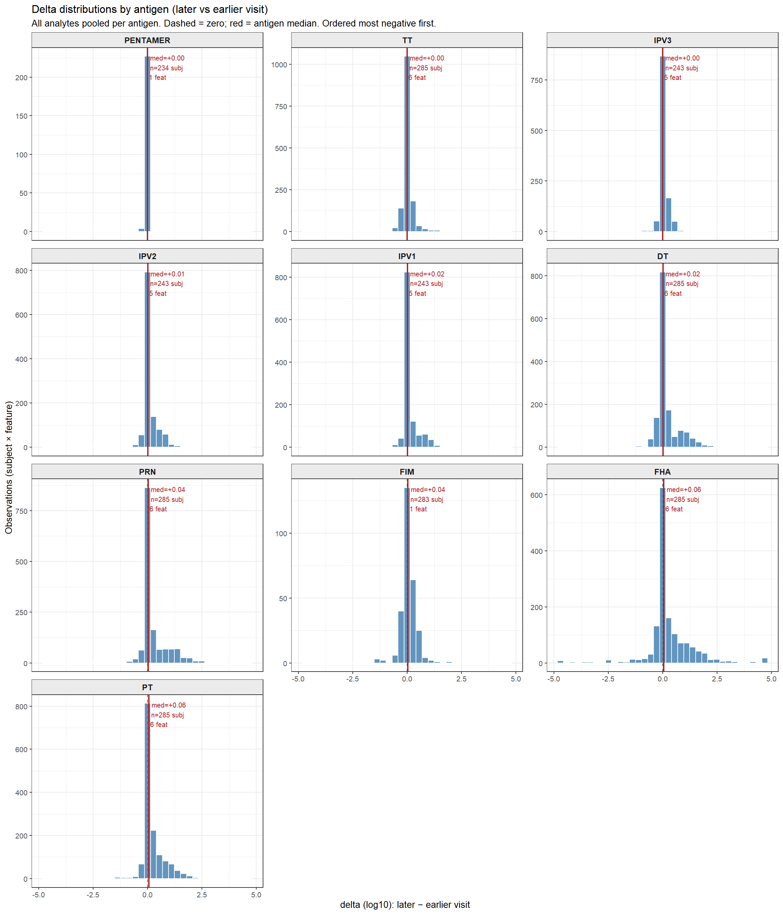
Figure 4. Per-subject delta distributions by antigen (all analytes pooled within each antigen). Dashed = zero; red = antigen median. Ordered by median delta (most negative first).
| Antigen | N features | N mostly increasing | N mostly decreasing | N mixed | Median delta (log10) | Overall direction |
|---|---|---|---|---|---|---|
| TT | 6 | 0 | 1 | 5 | -0.004 | mixed |
| IPV3 | 5 | 2 | 1 | 2 | 0.000 | mixed |
| PENTAMER | 1 | 0 | 1 | 0 | 0.000 | predominantly decreasing |
| IPV2 | 5 | 2 | 1 | 2 | 0.011 | mixed |
| IPV1 | 5 | 2 | 1 | 2 | 0.014 | mixed |
| DT | 6 | 1 | 0 | 5 | 0.028 | mixed |
| PRN | 6 | 3 | 0 | 3 | 0.040 | mixed |
| FIM | 1 | 1 | 0 | 0 | 0.042 | predominantly increasing |
| FHA | 6 | 3 | 1 | 2 | 0.074 | mixed |
| PT | 6 | 3 | 0 | 3 | 0.082 | mixed |
Each figure in this section fixes one analyte (IgG, IgG1, IgG2, IgG3, IgG4, or WHOLE_WT_IgG) and shows a separate histogram panel for each antigen measured with that analyte. This layout isolates whether an analyte behaves consistently across antigens, or whether the direction of change is antigen-specific. Features are ordered within each figure by their median delta (most decreasing left/top, most increasing right/bottom).
Note: analytes with zero observations at one or both visits (e.g. effector-function, FcR-binding, or B-memory assays, where applicable) cannot contribute to this paired change analysis and do not appear below.
Total antigen-specific IgG, by antigen.
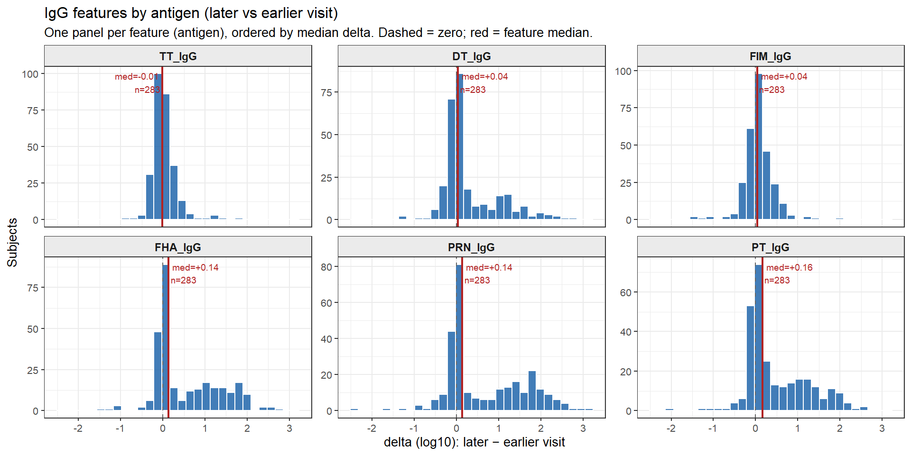
Figure 5a. Per-subject delta distributions for total antigen-specific IgG features (one panel per antigen, ordered by median delta).
IgG1 by antigen. IgG1 is the dominant IgG subclass in serum and is efficiently transferred across the placenta.
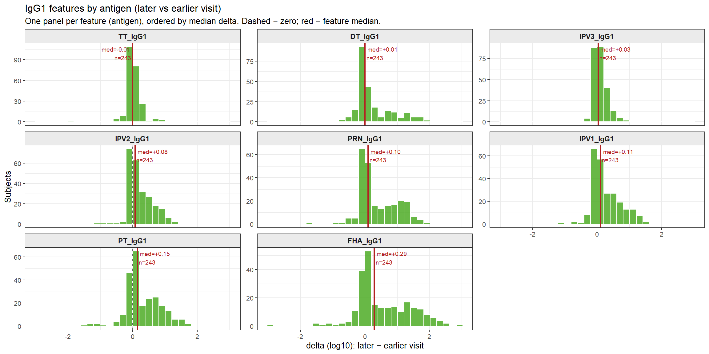
Figure 5b. Per-subject delta distributions for IgG1 features by antigen (ordered by median delta).
IgG2 by antigen. IgG2 is enriched in responses to polysaccharide antigens and is transferred across the placenta less efficiently than IgG1.
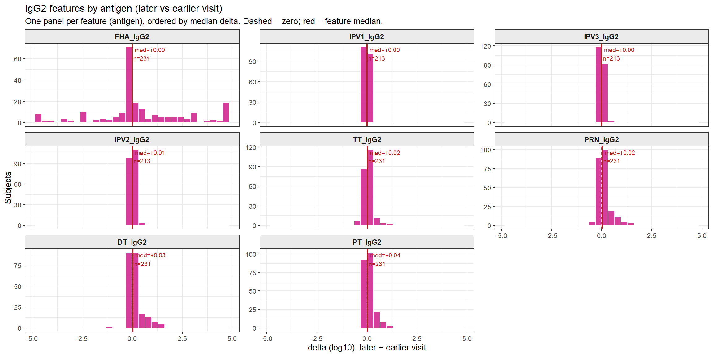
Figure 5c. Per-subject delta distributions for IgG2 features by antigen (ordered by median delta).
IgG3 by antigen. IgG3 has the shortest serum half-life of the IgG subclasses (~7 days vs ~21 days for IgG1).
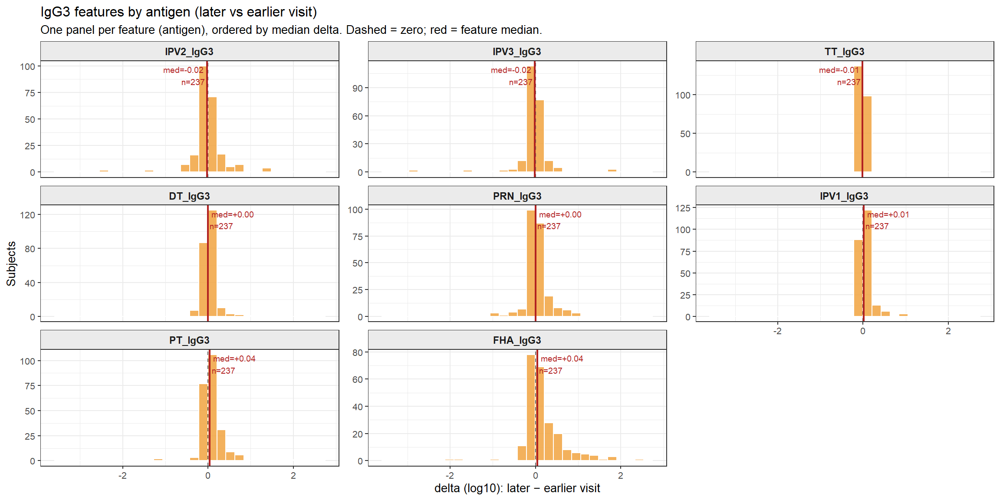
Figure 5d. Per-subject delta distributions for IgG3 features by antigen (ordered by median delta).
IgG4 by antigen. IgG4 is typically the lowest-abundance IgG subclass and is elevated by chronic/repeated antigen exposure.
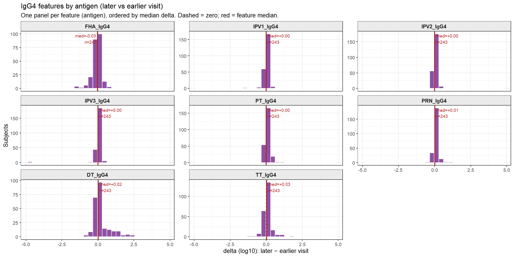
Figure 5e. Per-subject delta distributions for IgG4 features by antigen (ordered by median delta).
WHOLE_WT_IgG: a single whole-cell lysate total-IgG measurement integrating broadly across antigens.
## NULLThe combined (pooled) results above are retained unchanged. This section ADDS the per-arm breakdown of the same PregEarly → MatBirth production change, computed live from the loaded data. It exists to answer one specific question: do the tetanus (TT) and diphtheria (DT) toxoid antigens — which are vaccine components — show a within-arm rise in IgG and IgG1 from early pregnancy to delivery?
| arm_name | features | % feats mostly increasing | median of feature median-deltas |
|---|---|---|---|
| TdaP | 47 | 66.0 | 0.168 |
| TT | 47 | 4.3 | 0.000 |
| Antigen | Analyte | Arm | n pairs | median PregEarly | median MatBirth | median delta | % increasing | p signed-rank |
|---|---|---|---|---|---|---|---|---|
| DT | IgG | Pooled | 283 | -0.971 | -0.506 | 0.041 | 58.0 | 8.00e-07 |
| DT | IgG | TdaP | 130 | -0.997 | -0.181 | 0.680 | 80.0 | 0.00e+00 |
| DT | IgG | TT | 153 | -0.955 | -0.939 | -0.028 | 39.2 | 1.65e-03 |
| DT | IgG1 | Pooled | 243 | 2.221 | 2.723 | 0.007 | 51.0 | 1.08e-04 |
| DT | IgG1 | TdaP | 112 | 2.247 | 3.007 | 0.549 | 80.4 | 0.00e+00 |
| DT | IgG1 | TT | 131 | 2.198 | 2.164 | -0.038 | 26.0 | 1.10e-06 |
| TT | IgG | Pooled | 283 | 0.874 | 0.871 | -0.011 | 48.1 | 8.47e-01 |
| TT | IgG | TdaP | 130 | 0.917 | 0.841 | -0.042 | 41.5 | 2.18e-02 |
| TT | IgG | TT | 153 | 0.848 | 0.906 | 0.030 | 53.6 | 1.53e-02 |
| TT | IgG1 | Pooled | 243 | 3.483 | 3.480 | -0.008 | 48.6 | 7.23e-01 |
| TT | IgG1 | TdaP | 112 | 3.507 | 3.461 | -0.034 | 40.2 | 3.59e-02 |
| TT | IgG1 | TT | 131 | 3.472 | 3.517 | 0.014 | 55.7 | 1.77e-02 |
Toxoid verdict (computed from the loaded data):
Interpret each delta against its PregEarly baseline. A near-zero delta on top of an already-high baseline is a ceiling effect — mothers were already tetanus/diphtheria-immune from prior vaccination, so a booster moves the log10 value little. A near-zero delta on a low baseline would instead be a true non-response, worth checking (assay dynamic range, antigen coating, or which toxoids each arm’s vaccine actually contains: tetanus is in both TdaP and TT, whereas diphtheria is expected only where the comparator is Td rather than tetanus-only).
| Analyte | Antigen | Arm | n | median delta | % inc | p signed-rank |
|---|---|---|---|---|---|---|
| IgG | PT | Pooled | 283 | 0.161 | 70.3 | 0.00e+00 |
| IgG | PT | TdaP | 130 | 1.078 | 95.4 | 0.00e+00 |
| IgG | PT | TT | 153 | -0.004 | 49.0 | 5.67e-01 |
| IgG | FHA | Pooled | 283 | 0.138 | 74.6 | 0.00e+00 |
| IgG | FHA | TdaP | 130 | 1.213 | 95.4 | 0.00e+00 |
| IgG | FHA | TT | 153 | 0.015 | 56.9 | 2.71e-01 |
| IgG | PRN | Pooled | 283 | 0.142 | 72.4 | 0.00e+00 |
| IgG | PRN | TdaP | 130 | 1.563 | 95.4 | 0.00e+00 |
| IgG | PRN | TT | 153 | 0.006 | 52.9 | 7.90e-01 |
| IgG | FIM | Pooled | 283 | 0.042 | 60.8 | 3.63e-05 |
| IgG | FIM | TdaP | 130 | 0.114 | 66.2 | 3.30e-06 |
| IgG | FIM | TT | 153 | 0.015 | 56.2 | 3.14e-01 |
| IgG | TT | Pooled | 283 | -0.011 | 48.1 | 8.47e-01 |
| IgG | TT | TdaP | 130 | -0.042 | 41.5 | 2.18e-02 |
| IgG | TT | TT | 153 | 0.030 | 53.6 | 1.53e-02 |
| IgG | DT | Pooled | 283 | 0.041 | 58.0 | 8.00e-07 |
| IgG | DT | TdaP | 130 | 0.680 | 80.0 | 0.00e+00 |
| IgG | DT | TT | 153 | -0.028 | 39.2 | 1.65e-03 |
| IgG1 | PT | Pooled | 243 | 0.148 | 72.8 | 0.00e+00 |
| IgG1 | PT | TdaP | 112 | 0.681 | 96.4 | 0.00e+00 |
| IgG1 | PT | TT | 131 | 0.007 | 52.7 | 8.13e-01 |
| IgG1 | FHA | Pooled | 243 | 0.292 | 74.5 | 0.00e+00 |
| IgG1 | FHA | TdaP | 112 | 1.298 | 97.3 | 0.00e+00 |
| IgG1 | FHA | TT | 131 | 0.018 | 55.0 | 2.69e-01 |
| IgG1 | PRN | Pooled | 243 | 0.100 | 67.9 | 0.00e+00 |
| IgG1 | PRN | TdaP | 112 | 0.958 | 95.5 | 0.00e+00 |
| IgG1 | PRN | TT | 131 | -0.008 | 44.3 | 3.81e-01 |
| IgG1 | TT | Pooled | 243 | -0.008 | 48.6 | 7.23e-01 |
| IgG1 | TT | TdaP | 112 | -0.034 | 40.2 | 3.59e-02 |
| IgG1 | TT | TT | 131 | 0.014 | 55.7 | 1.77e-02 |
| IgG1 | DT | Pooled | 243 | 0.007 | 51.0 | 1.08e-04 |
| IgG1 | DT | TdaP | 112 | 0.549 | 80.4 | 0.00e+00 |
| IgG1 | DT | TT | 131 | -0.038 | 26.0 | 1.10e-06 |
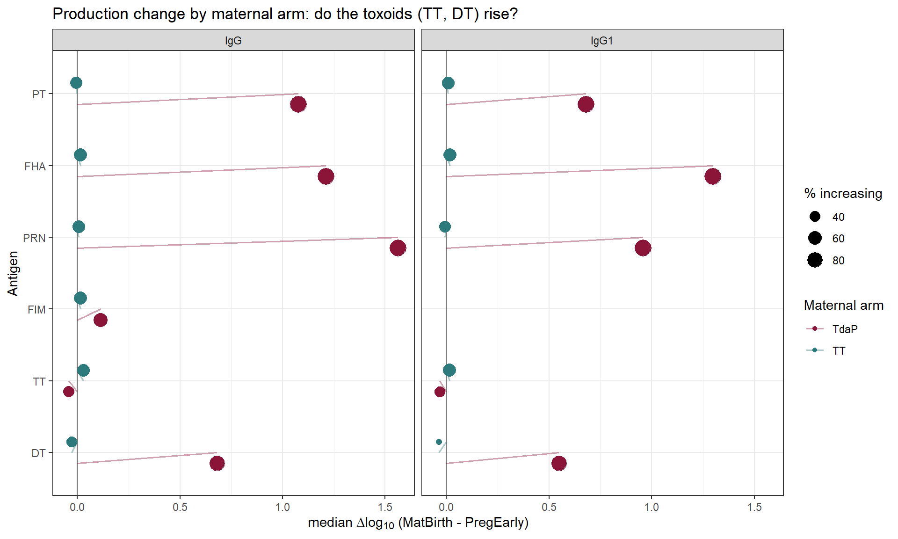
Figure A1. Production change (median delta log10, MatBirth - PregEarly) for the six vaccine antigens, total IgG and IgG1, by maternal arm. Point size = percent of mothers increasing. Positive = rise from early pregnancy to delivery. The TT and DT rows show whether the toxoid antigens move within each arm.
All quantities in this section are computed from the current data
at knit time (from feat_summary, analyte_sum,
prod_all, the per-arm summaries and the headline
diagnostics). Nothing here is hardcoded, so the narrative always matches
the tables and figures above.
From early pregnancy (PregEarly) to delivery
(MatBirth) the mother receives the study vaccine, so the
expected signal is a vaccine-induced rise in antibody to the vaccine
antigens, concentrated in the isotype a protein-antigen booster
recruits.
Across the 47 well-covered features, 17 are mostly increasing, 6 mostly decreasing, and 24 mixed. The pooled median change is +0.019 log10, while 71.2% of mothers show a net positive mean shift across their features (median per-subject offset +0.097 log10). A near-zero pooled median combined with most subjects tilting positive is the signature of a response concentrated in a subset of features (the vaccine targets) and flat elsewhere — averaging the two washes out at the feature level but still tilts most individual mothers positive.
Analytes predominantly increasing: ADCD, IgG1, IgG. Flat or mixed overall: IgG3, IgG4, IgG2.
A protein-antigen booster preferentially recruits IgG1, so a signal concentrated in total IgG and IgG1 with little movement in IgG2/IgG4 is the immunologically expected pattern rather than a missing signal.
Mapping the change onto the acellular-pertussis components present in the data:
IgG1 against the pertussis antigens is the subclass most efficiently
transferred across the placenta (see the companion
MatBirth -> CordBlood analysis), so a vaccine that loads
this compartment is loading the one the placenta transfers best — the
mechanistic basis for maternal vaccination protecting the newborn.
Features mostly increasing by arm: TdaP 66% vs TT 4.3% (Table 7). An arm-specific increase points to a vaccine-driven (biological) effect rather than a shared technical or developmental drift.
Toxoid antigens, by arm (does tetanus/diphtheria IgG rise from PregEarly to MatBirth?):
Read each toxoid Δ against its PregEarly baseline: a small Δ on an already-high baseline is a ceiling effect (pre-existing tetanus/diphtheria immunity), not an absent response; a small Δ on a low baseline would be a genuine non-response worth investigating.
Both PregEarly and MatBirth subclass values
are normalized bead-array values (maternal samples placed on a common
assay scale); total IgG comes from a separate ELISA path and is not
affected by that normalization. Where the total-IgG and IgG1 signals
agree for the same antigens (compare the per-antigen lines above), the
change is more likely biological than a scaling artifact of either
platform.
| Section | Stratum | Model | N entered | N used | N dropped | Dropped due to (NA driver) |
|---|---|---|---|---|---|---|
| Coverage | DT_IgG | paired availability | 312 | 283 | 29 | PregEarly n=312, MatBirth n=283 |
| Coverage | FHA_IgG | paired availability | 312 | 283 | 29 | PregEarly n=312, MatBirth n=283 |
| Coverage | FIM_IgG | paired availability | 312 | 283 | 29 | PregEarly n=312, MatBirth n=283 |
| Coverage | PRN_IgG | paired availability | 312 | 283 | 29 | PregEarly n=312, MatBirth n=283 |
| Coverage | PT_IgG | paired availability | 312 | 283 | 29 | PregEarly n=312, MatBirth n=283 |
| Coverage | TT_IgG | paired availability | 312 | 283 | 29 | PregEarly n=312, MatBirth n=283 |
| Coverage | DT_IgG1 | paired availability | 264 | 243 | 21 | PregEarly n=264, MatBirth n=247 |
| Coverage | DT_IgG4 | paired availability | 264 | 243 | 21 | PregEarly n=264, MatBirth n=247 |
| Coverage | FHA_IgG1 | paired availability | 264 | 243 | 21 | PregEarly n=264, MatBirth n=247 |
| Coverage | FHA_IgG4 | paired availability | 264 | 243 | 21 | PregEarly n=264, MatBirth n=247 |
| Coverage | IPV1_IgG1 | paired availability | 264 | 243 | 21 | PregEarly n=264, MatBirth n=247 |
| Coverage | IPV1_IgG4 | paired availability | 264 | 243 | 21 | PregEarly n=264, MatBirth n=247 |
| Coverage | IPV2_IgG1 | paired availability | 264 | 243 | 21 | PregEarly n=264, MatBirth n=247 |
| Coverage | IPV2_IgG4 | paired availability | 264 | 243 | 21 | PregEarly n=264, MatBirth n=247 |
| Coverage | IPV3_IgG1 | paired availability | 264 | 243 | 21 | PregEarly n=264, MatBirth n=247 |
| Coverage | IPV3_IgG4 | paired availability | 264 | 243 | 21 | PregEarly n=264, MatBirth n=247 |
| Coverage | PRN_IgG1 | paired availability | 264 | 243 | 21 | PregEarly n=264, MatBirth n=247 |
| Coverage | PRN_IgG4 | paired availability | 264 | 243 | 21 | PregEarly n=264, MatBirth n=247 |
| Coverage | PT_IgG1 | paired availability | 264 | 243 | 21 | PregEarly n=264, MatBirth n=247 |
| Coverage | PT_IgG4 | paired availability | 264 | 243 | 21 | PregEarly n=264, MatBirth n=247 |
| Coverage | TT_IgG1 | paired availability | 264 | 243 | 21 | PregEarly n=264, MatBirth n=247 |
| Coverage | TT_IgG4 | paired availability | 264 | 243 | 21 | PregEarly n=264, MatBirth n=247 |
| Coverage | DT_IgG3 | paired availability | 246 | 237 | 9 | PregEarly n=246, MatBirth n=241 |
| Coverage | FHA_IgG3 | paired availability | 246 | 237 | 9 | PregEarly n=246, MatBirth n=241 |
| Coverage | IPV1_IgG3 | paired availability | 246 | 237 | 9 | PregEarly n=246, MatBirth n=241 |
| Coverage | IPV2_IgG3 | paired availability | 246 | 237 | 9 | PregEarly n=246, MatBirth n=241 |
| Coverage | IPV3_IgG3 | paired availability | 246 | 237 | 9 | PregEarly n=246, MatBirth n=241 |
| Coverage | PRN_IgG3 | paired availability | 246 | 237 | 9 | PregEarly n=246, MatBirth n=241 |
| Coverage | PT_IgG3 | paired availability | 246 | 237 | 9 | PregEarly n=246, MatBirth n=241 |
| Coverage | TT_IgG3 | paired availability | 246 | 237 | 9 | PregEarly n=246, MatBirth n=241 |
| Coverage | DT_ADCD | paired availability | 262 | 234 | 28 | PregEarly n=262, MatBirth n=240 |
| Coverage | FHA_ADCD | paired availability | 262 | 234 | 28 | PregEarly n=262, MatBirth n=240 |
| Coverage | IPV1_ADCD | paired availability | 262 | 234 | 28 | PregEarly n=262, MatBirth n=240 |
| Coverage | IPV2_ADCD | paired availability | 262 | 234 | 28 | PregEarly n=262, MatBirth n=240 |
| Coverage | IPV3_ADCD | paired availability | 262 | 234 | 28 | PregEarly n=262, MatBirth n=240 |
| Coverage | PENTAMER_ADCD | paired availability | 262 | 234 | 28 | PregEarly n=262, MatBirth n=240 |
| Coverage | PRN_ADCD | paired availability | 262 | 234 | 28 | PregEarly n=262, MatBirth n=240 |
| Coverage | PT_ADCD | paired availability | 262 | 234 | 28 | PregEarly n=262, MatBirth n=240 |
| Coverage | TT_ADCD | paired availability | 262 | 234 | 28 | PregEarly n=262, MatBirth n=240 |
| Coverage | DT_IgG2 | paired availability | 252 | 231 | 21 | PregEarly n=252, MatBirth n=235 |
| Coverage | FHA_IgG2 | paired availability | 252 | 231 | 21 | PregEarly n=252, MatBirth n=235 |
| Coverage | PRN_IgG2 | paired availability | 252 | 231 | 21 | PregEarly n=252, MatBirth n=235 |
| Coverage | PT_IgG2 | paired availability | 252 | 231 | 21 | PregEarly n=252, MatBirth n=235 |
| Coverage | TT_IgG2 | paired availability | 252 | 231 | 21 | PregEarly n=252, MatBirth n=235 |
| Coverage | IPV1_IgG2 | paired availability | 234 | 213 | 21 | PregEarly n=234, MatBirth n=217 |
| Coverage | IPV2_IgG2 | paired availability | 234 | 213 | 21 | PregEarly n=234, MatBirth n=217 |
| Coverage | IPV3_IgG2 | paired availability | 234 | 213 | 21 | PregEarly n=234, MatBirth n=217 |
Reuses the shared pipeline (config/endpoints.R,
R/C1_serology_helpers.R, the global visit recode, and the
N-tracker). Knit both formats with
rmarkdown::render("cord_to_infmon2_analysis_refactored.Rmd", output_format = "all").